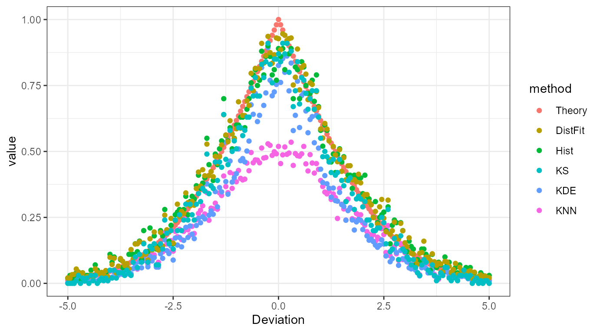
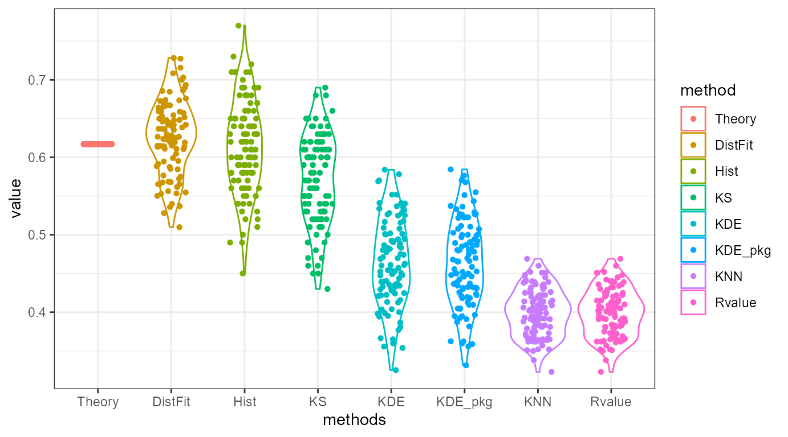

ovltools.Rmdovltools designed to provide some of functions that can calculate distribution overlap between two numeric vectors. It also provides significance testing based on permutation, to assess whether given sample distributions are drawn from the same distribution or not. Current version of ovltools provides KNN (K-Nearest Neighbor), KDE (Kernel Density Estimation), histogram, distribution fitting based overlap estimation methods.
Let \(f_1(x;\theta_1)\) and \(f_2(x;\theta_2)\) be the density functions for two populations from the same family of distributions. The overlap between two density functions is defined as follows.
\[\Delta = \int \min[f_1(x;\theta_1), f_2(x;\theta_2)] dx\] The overlap \(\Delta\) ranges between 0 and 1.
Suppose we have one standard normal distributions \(\mathcal{N}(0,1)\) and series of standard normal distribution \(\mathcal{N}(0+dx, 1)\). Here \(dx\) ranges from \(-5\) to \(5\) by \(0.01\). Thus, we have \(1,000 + 1\) distributions in second case. Let’s suppose we want to calculate overlap between samples drawn from first distribution and samples drawn from each of second distribution. The ovltools provides existing solutions of this problem in one package.
library(ovltools)
## Deviation Experiments
distfit = histogram = kde = rv = ks = c()
dx = seq(-5, 5, 0.05)
for(i in 1:length(dx)){
x1 = rnorm(100)
x2 = rnorm(100, 0+dx[i])
tmp_rv = ovl_knn(x1, x2, k=5)
tmp_kde = ovl_kde(x1, x2)
tmp_hist = ovl_hist(x1, x2)
tmp_ks = 1-ks.test(x1,x2)$statistic
tmp_distfit = ovl_distfit(x1, x2, "norm")
rv = c(rv, tmp_rv)
kde = c(kde, tmp_kde)
histogram = c(histogram, tmp_hist)
distfit = c(distfit, tmp_distfit)
ks = c(ks, tmp_ks)
}
## Theoretical value of overlap based on CDF and PDF.
OVL_Theory = 2 * pnorm(-(abs(dx-0))/(2*1))
## Visualize with ggplot
library(dplyr)
#>
#> 戼㸴搼㸹挼㸰戼㹤挼㸰挼㸷 挼㸶搼㸰Ű挼㸱昼㸶戼㸸愼㸶 戼㹡挼㹥挼㸲昼㸸挼㸷մϴ搼㸹: 'dplyr'NA#> The following objects are masked from 'package:stats':
#>
#> filter, lag
#> The following objects are masked from 'package:base':
#>
#> intersect, setdiff, setequal, union
library(tidyr)
library(ggplot2)
RvMat = data.frame(dx, OVL_Theory, rv, kde, histogram, distfit, ks)
colnames(RvMat) = c("dx", "Theory", "KNN", "KDE", "Hist", "DistFit", "KS")
RvMat %>% tidyr::gather(method, value, -dx) %>%
mutate(method=factor(method,
levels=c("Theory", "DistFit", "Hist",
"KS", "KDE", "KNN"))) %>%
ggplot2::ggplot(aes(x=dx, y=value, col=method)) +
geom_point() +
theme_bw() +
xlab("Deviation") +
ylab("value")
Theory: Theoretical overlap value calculated by CDF
KS: Kolomogrov-Smirnov Test Statistic
Hist: Histogram
DistFit: Distribution Fitting
KDE: Kernel Density Estimation
KNN: K-Nearest Neighbor
Now suppose we want to perform \(N=1,000\) random sampling to estimate overlap between two distributions, \(\mathcal{N}(0,1)\) and \(\mathcal{N}(1,1)\). We can perform this experiment as previous with ovltools. Here I compared ovl_kde with existing package called overlapping and ovl_knn with Rvalue which is proposed in computers, 2019.
library(ovltools)
library(overlapping)
#> 挼㸷ʿ攼㸴挼㸷搼㸱 挼㸶搼㸰Ű挼㸱昼㸶戼㸸愼㸶 戼㸷ε昼㸹挼㸱搼㹦挼㸰Դϴ搼㸹: testthatNA#>
#> 戼㸴搼㸹挼㸰戼㹤挼㸰挼㸷 挼㸶搼㸰Ű挼㸱昼㸶戼㸸愼㸶 戼㹡挼㹥挼㸲昼㸸挼㸷մϴ搼㸹: 'testthat'NA#> The following object is masked from 'package:tidyr':
#>
#> matches
#> The following object is masked from 'package:dplyr':
#>
#> matches
## Deviation Experiments
distfit = histogram = kde = kde_by_package = rv_from_src = ks = rv = c()
for(i in 1:100){
x1 = rnorm(100)
x2 = rnorm(100, 1)
tmp_rv = ovl_knn(x1, x2, k=5)
tmp_kde = ovl_kde(x1, x2)
tmp_hist = ovl_hist(x1, x2)
tmp_distfit = ovl_distfit(x1, x2, "norm")
tmp_ks = 1-ks.test(x1,x2)$statistic
rv = c(rv, tmp_rv)
kde = c(kde, tmp_kde)
kde_by_package = c(kde_by_package, overlap(list(x1, x2))$OV)
rv_from_src = c(rv_from_src, Rvalue(c(x1,x2), c(rep(0,length(x1)), rep(1,length(x2)))))
histogram = c(histogram, tmp_hist)
distfit = c(distfit, tmp_distfit)
ks = c(ks, tmp_ks)
}
## Theoretical value of overlap (For Standard Normal Distribution Case).
OVL_Theory = 2 * pnorm(-(abs(1-0))/(2*1))
## Visualize with ggplot
library(dplyr)
library(tidyr)
library(ggplot2)
RvMat = data.frame(OVL_Theory, rv, rv_from_src, distfit, kde, kde_by_package, histogram, ks)
colnames(RvMat) = c("Theory", "KNN", "Rvalue", "DistFit", "KDE", "KDE_pkg", "Hist", "KS")
RvMat %>% gather(method, value) %>%
mutate(method=factor(method,
levels=c("Theory", "DistFit", "Hist", "KS",
"KDE", "KDE_pkg", "KNN", "Rvalue"))) %>%
ggplot(aes(x=method, y=value, col=method)) +
geom_violin() +
geom_jitter(shape=16, position=position_jitter(0.2))+
theme_bw() +
xlab("methods") +
ylab("value")
As you may see in the figure, implementation in ovltools are essentially the same as the implemted functions in other packages. It is worth to say that histogram based overlap estimation is the most closely estimate true PDF overlap except distribution fitting. However distribution fitting needs to a priori knowledge about the underlying distribution. Therefore, histogram based method is generally better than other methods. Kolomogrov-smirnov test statistic \(D\) provide similar trends but since it calculates maximum distance between two CDFs, it did not match with true overlap between two PDFs.